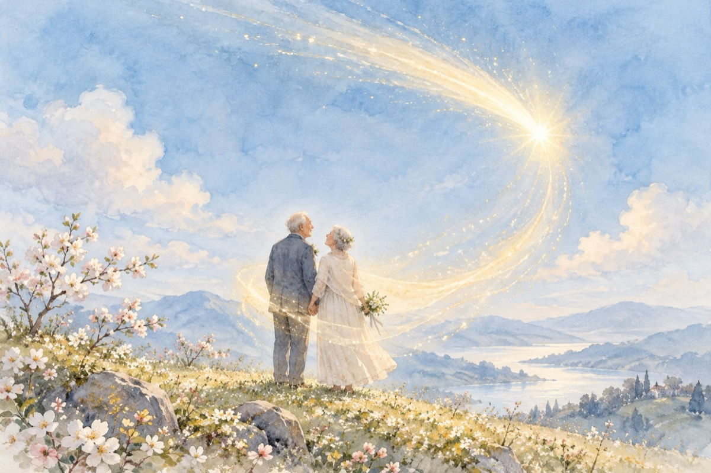

El și ea
Anii vin și anii trec
Sub același soare sfânt
Amintirile se-ntrec
Urme pe acest pământ.
Au fost și copii și-adulți
Și făuritori de vise
Ajungând îndrăgostiți
Dându-și start sentimentelor aprinse!
El-Romeo, Ea-Julieta,
Împreună s-au vrăjit
Precum pe boltă cometa
Cu lumina-i i-a-nvelit.
Anii au trecut cuminți
Precum apa de izvor
Ei au devenit părinți
Lăsând urme-n viitor!
Viața lor e un tezaur
El mire și Ea mireasă
Iată-i la nunta de aur
Cea de platină urmează!
Vasile Groza